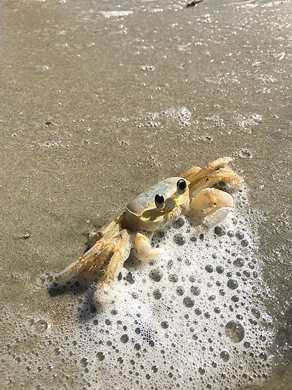
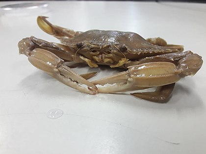
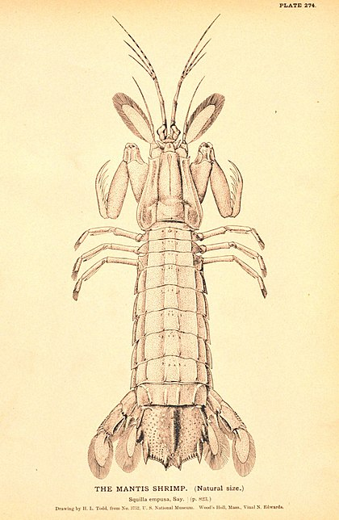

Fatos sobre o Stomatopoda
Os estomatópodes são predadores ativos que caçam presas com o auxílio de um sentido de visão muito apurado e capaz de interpretar polarização no espectro ultravioleta e infravermelho).
Apresentam uma grande variação de tamanho, que pode ir de poucos milímetros até aproximadamente 40 cm nas espécies maiores.
Eles vivem em fundo consolidado, lodoso ou ainda arenoso, onde cavam seus buracos ou aproveitam-se dos orifícios deixados por outros animais para neles se instalar.
São animais exclusivamente carnívoros, alimentando-se de camarões, caranguejos, moluscos, peixes e até mesmo outros da mesma ordem.
O segundo par de patas, muito desenvolvido, é usado tanto para atacar a presa como para se defender.
O urópodo, quando aberto, também funciona para defesa, como um escudo, fechando a galeria em que o animal esteja instalado.
A fêmea desova no local onde se abriga e, em caso de perigo, enrola os ovos como uma bola, prendendo-os junto ao corpo até encontrar um abrigo mais protegido.
Também conhecidas como esquilas ou lagosta-boxeadora, espalhadas pelas costas dos mares tropicais e subtropicais.
Além das patas, elas apresentam uma silhueta característica, devido ao grande comprimento aparentemente de seu abdómen.
Os ovos ficam ligados por uma massa gelatinosa que a mãe carrega contra o ventre até que eclodem, limpando-os sem parar.
As maiores esmagadoras, tais como exemplares de Odontodactylus scyllarus, são capazes de desferir um dos mais rápidos e violentos golpes do reino animal, um soco que pode apresentar a velocidade de um tiro calibre .22 (equivalente a 720 km/h) e uma pressão de impacto de 600 N/cm².
Essa força esmagadora é a responsável pelo seu título de "lagosta-boxeadora" e é capaz de facilmente quebrar a carapaça de um caranguejo, as conchas duras e calcificadas de gastrópodes ou até mesmo quebrar o vidro reforçado de um aquário.
Filo
Filo (em latim: phylum; em grego: Φῦλον; plural: Φῦλα: phyla), é um taxon usado na classificação cientifica dos seres vivos.
A palavra Phyla tem a sua origem no conceito grego clássico de φυλαί, phylai, o sistema de votação de base clânica usado nas cidades-estado da Grécia Antiga.
Os filos são os agrupamentos mais elevados geralmente aceitos ou o agrupamento mais alargado geralmente aceito de seres vivos que partilham certas características evolutivas comuns.
Tal não impede que os filos sejam por vezes agrupados em taxa mais gerais, designados por superfilos (ou versão latinizada, superphyla), como por exemplo os Ecdysozoa, um agrupamento de 8 filos, incluindo os artrópodes e os vermes; ou os Deuterostomia (incluindo os equinodermes, os cordados, hemichordados e quetognatas).
Em linguagem informal, a designação filo é utilizada, embora com risco de incorrecção, para designar agrupamentos de seres vivos baseados numa configuração morfológica comum.
A utilização do termo filo teve a sua origem no campo zoológico, sendo no campo botânico tradicionalmente preferido o uso do termo divisão para designar agrupamentos taxionómicos de nível correspondente.
Contudo, na moderna Sistemática, um filo corresponde a uma divisão enquanto grupo taxionómico, sendo o conceito de utilização universal, isto é aplicável em toda a Biologia, sem destrinça para os campos clássicos da Botânica e da Zoologia.
Esta posição foi reafirmada no XV Congresso Internacional de Botânica, em 1992, que incluiu esse princípio no Código Internacional de Nomenclatura Botânica. Assim sendo, na classificação de plantas (reino Metaphyta), os filos subdividem-se, normalmente, em Classes, pelo que o termo divisão pode ser substituído pelo termo filo.

Subfilo
Os crustáceos (lat. crusta, carapaça dura) são animais invertebrados artropódes. Entre eles estão alguns dos animais mais comuns que conhecemos, como siris, caranguejos , tatuzinhos-de-jardim, lagostas, cracas e camarões. Há mais de 67.000 espécies descritas de crustáceos da fauna atual, e provavelmente um número 5 ou 10 vezes maior de espécies estão ainda para serem descobertas e catalogadas. Eles se apresentam como alguns dos animais mais abundantes, diversificados e com maior distribuição nos oceanos.
Os crustáceos exibem uma diversidade impressionante de forma, de hábitos e de tamanho. O menor crustáceo conhecido apresenta menos de 100 μm de comprimento. Os maiores são os caranguejos-aranha do Japão (Macrocheira kaempferi), com 4 m de abertura de pernas, e o caranguejo gigante da Tasmânia (Pseudocarcinus gigas).

Classe
Classe é uma categoria utilizada na classificação científica dos seres vivos, o sistema taxonómico mais utilizado na moderna biologia. Naquela classificação, a Classe é a categoria taxonómica constituída por um conjunto de Ordens; as Classes por sua vez agrupam-se em Filos (que na botânica são frequentemente designados por Divisões). Quando necessário, uma classe pode ser dividida em subclasses, agrupando organismos que apresentem um grau de diferenciação que mereça ser destacado.
Por convenção, na botânica os nomes das Classes terminam em -opsida entre os fungos em -mycetes e em algas em -phyceae.

Subclasse
Hoplocarida Calman, 1904, é uma subclasse de malacóstracos marinhos bentônicos, de hábito predador (carnívoro raptorial), cujo tamanho varia de 2 até 30 cm. Caracterizam-se pela presença de um segundo par de maxilípedes modificado em uma garra raptorial expandida e subquelada, utilizada para forragear, escavar tocas e para perfurar ou esmagar as presas. Além disso, apresentam brânquias nos pleópodes. Sua distribuição ocorre majoritariamente em águas marinhas rasas tropicais e subtropicais. Vivem em buracos ou em abrigos naturais e tendem a ser territoriais.
A única ordem dentro de Hoplocarida com representantes vivos é Stomatopoda Latreille, 1817, popularmente conhecidos como tamarutacas ou tamburutacas ("mantis shrimp" em inglês), mas outros grupos existiram no Paleozoico: Aeschronectida e Palaeostomatopoda. O registro fóssil indica que a origem de Stomatopoda ocorreu no Período Devoniano. Todos os cerca de 450 hoplocáridos vivos são colocados na ordem Stomatopoda, dentro da subordem Unipeltata, constituído por sete superfamílias: Bathysquilloidea, Erythrosquilloidea, Eurysquilloidea, Gonodactyloidea, Lysiosquilloidea, Parasquilloidea e Squilloidea.
